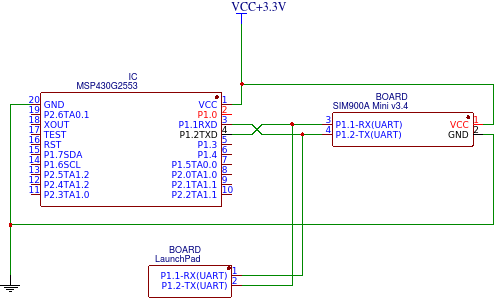
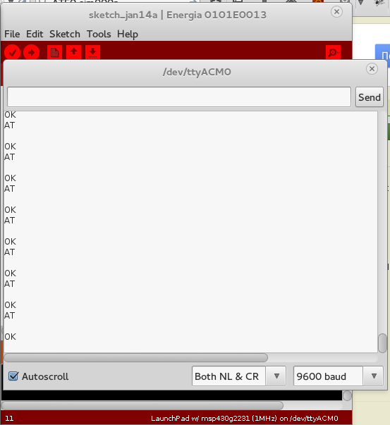

Пов’язані статті серії:
При використанні UART, з метою налагодження, мені було необхідно моніторити, що посилає MSP430 і що відповідає другий пристрій (SIM900).
Для цього необхідно вийняти МК з LaunchPad і підключити незалежно (наприклад, на breadboard).
А сам LaunchPad підключити до комп’ютера, щоб моніторити UART.
Схема підключення UART MSP430 -> Device так, щоб на комп’ютері можна було бачити відповіді Device:

На комп’ютері для читання з UART я користуюся Serial Monitor в IDE Energia (підійде будь-який інший спосіб читати з послідовного порту).

Цей матеріал було перенесено зі старого блогу antigluk.blogspot.com.